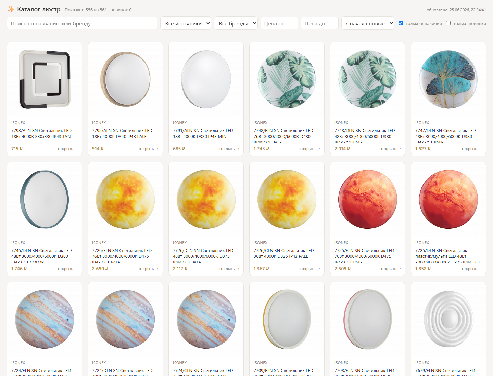
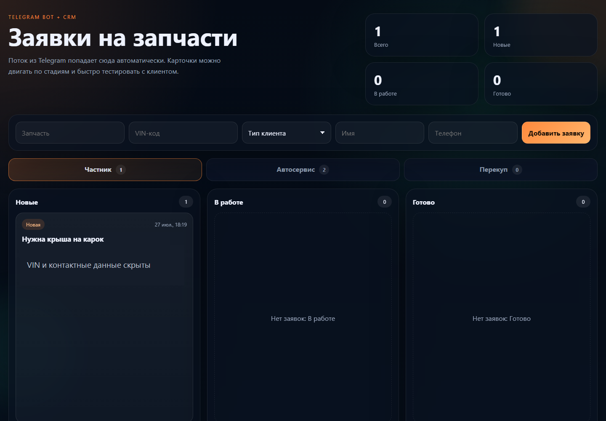
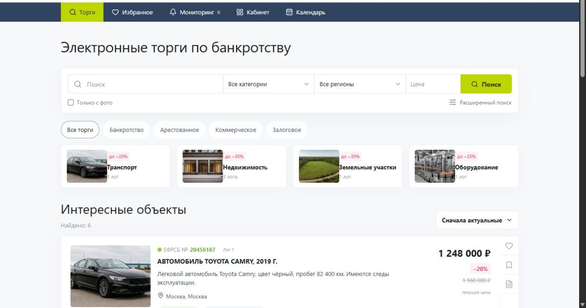
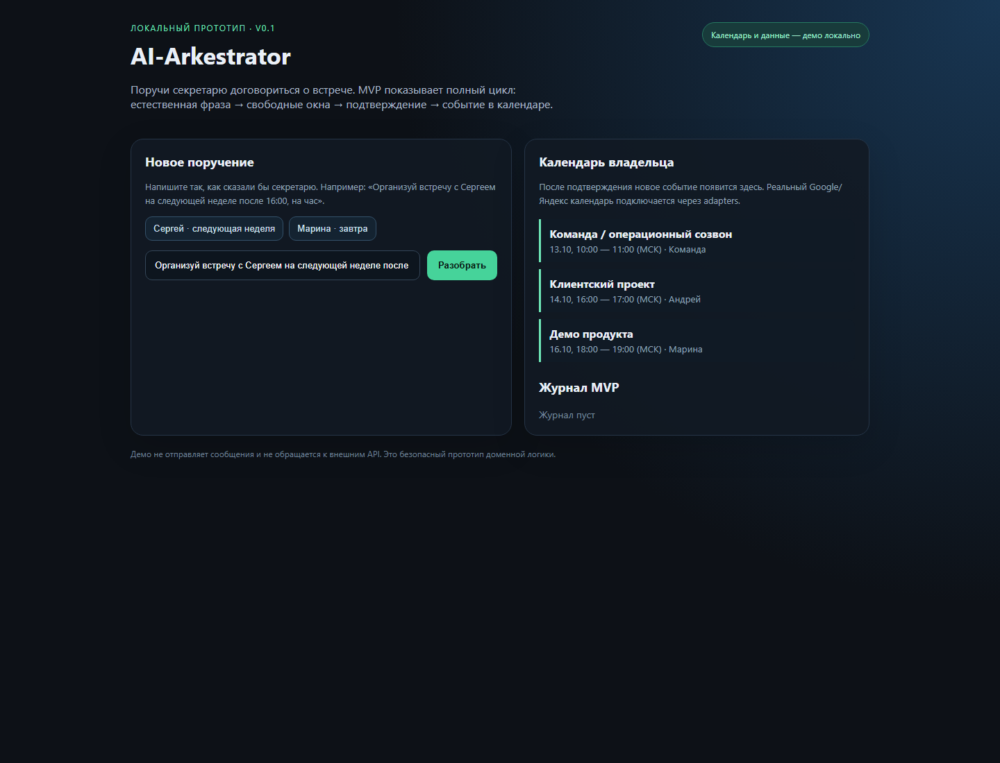

Публичная витринаКаталог светильников
Собрал товары поставщиков в витрину с поиском, фильтрами по брендам и источникам, ценой и наличием.
- В каталоге на дату снимка — 561 позиция
- Данные на сайте помечены датой обновления: 25 июня 2026
Разрабатываю каталоги, ботов, CRM и внутренние сервисы. Беру операцию, которую команда повторяет вручную, и превращаю её в понятный рабочий инструмент.
Первый шаг — коротко описать, что сейчас приходится делать вручную. Техническое задание не нужно.
Каталоги, рабочие панели и сервисы, которые упрощают ежедневные процессы. В каждом проекте показываю конкретный пользовательский сценарий.

Публичная витринаСобрал товары поставщиков в витрину с поиском, фильтрами по брендам и источникам, ценой и наличием.

Снимок CRM · контакты скрытыБот принимает запросы в мессенджере и передаёт их менеджеру в CRM, где заявку можно вести по этапам.

Поиск лотов и личный кабинетСобрал структуру сервиса с каталогом, фильтрами, карточками объектов и личным кабинетом — от первого поиска до сохранения подходящих предложений.

Сценарий координации встречСпроектировал сценарий ассистента, который превращает сообщение в план встречи: разбирает вводные, предлагает время и ведёт журнал событий.
RSS → фильтрация и оценка → черновик через GigaChat → подтверждение редактором. В заметке от 22.07.2026: 145 материалов и две публикации.
Windows-приложение для этапов, поставщиков, архива и поиска по проектам. В портфолио проекта отмечено как используемое клиентом.
Система учёта доноров и запчастей: движение деталей, резервы, продажи, списания и журнал изменений.
Инструмент анализа входящих диалогов: выделяет запросы на запчасти и собирает структурированные данные для принятия решений.
Внутреннее пространство для управления операциями бьюти-пространства: финансы, смены, обращения и отчёты.
Начинаем с процесса, а не с выбора технологии. Сначала выясним, что повторяется, где теряются данные и какой результат нужен команде.
Соберу источники в каталог, выгрузку или панель с нужным поиском и фильтрами.
Настрою бота и рабочий экран, чтобы информация попадала в один понятный процесс.
Разработаю небольшое внутреннее приложение под ваши статусы, роли, документы и архив.
Фиксируем объём первой версии и показываем рабочую логику до масштабирования.
Что делается вручную, кто участвует и где возникают ошибки или задержки.
Определяем результат, необходимые данные, ограничения и критерии готовности.
Тестируем сценарий на согласованных примерах и собираем обратную связь.
Проверяем согласованные сценарии и обсуждаем дальнейшую поддержку.
«Сейчас мы вручную делаем… Хотим, чтобы…» — этого достаточно для первого разговора.
Я Дмитрий Исаев. Работаю с операциями склада и производства, поэтому при проектировании думаю и о человеке, который будет пользоваться системой каждый день. Создаю решения на Python и JavaScript, подключаю API и языковые модели, когда они дают практический результат.
Опишите операцию, которую хочется упростить. Вместе поймём, поможет ли здесь автоматизация и с какого небольшого шага лучше начать.